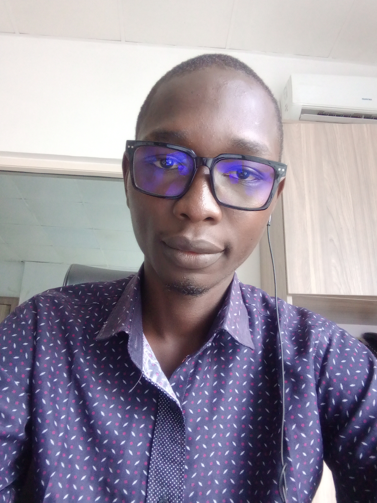

About Me
From wiring circuits to training vision models.
I'm a final-year Computer Engineering student at Ahmadu Bello University, Zaria. My path into engineering started with a curiosity about how physical systems and software logic come together and it has since taken me through networking support, frontend web development, and applied AI on embedded hardware.
During a six-month industrial training placement at Jamub Global Service, I supported LAN infrastructure and contributed to the company's website frontend. For my final year project, I independently designed an autonomous agricultural drone that uses computer vision to detect crop disease in the field. I hold certifications from Cisco and Huawei in data science and artificial intelligence, and I'm comfortable with remote data work such as annotation, labelling and transcription.
View Full CV
Values & Approach
Practical Problem-Solving
I learn by building from LAN troubleshooting to full hardware/software system integration on a live drone.
Continuous Learning
Certified by Cisco and Huawei in data science and AI, and always picking up new tools as projects demand them.
Cross-Disciplinary Thinking
Comfortable moving between embedded C-adjacent hardware work, Python-based AI, and frontend web development.